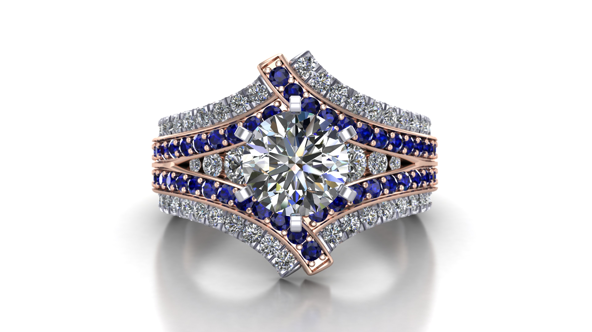
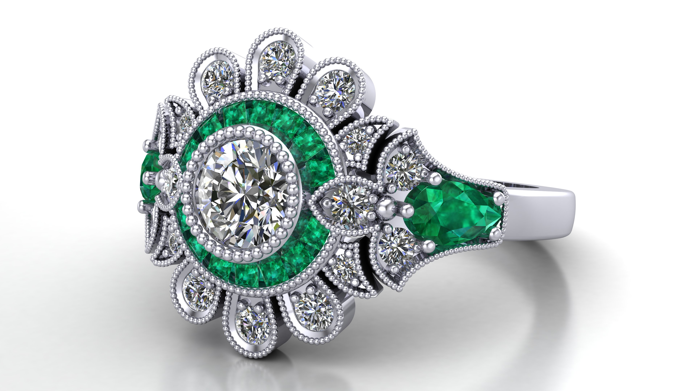
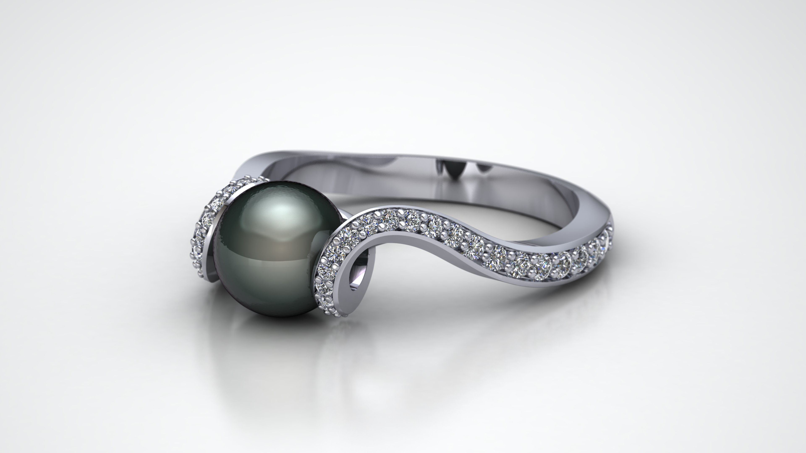
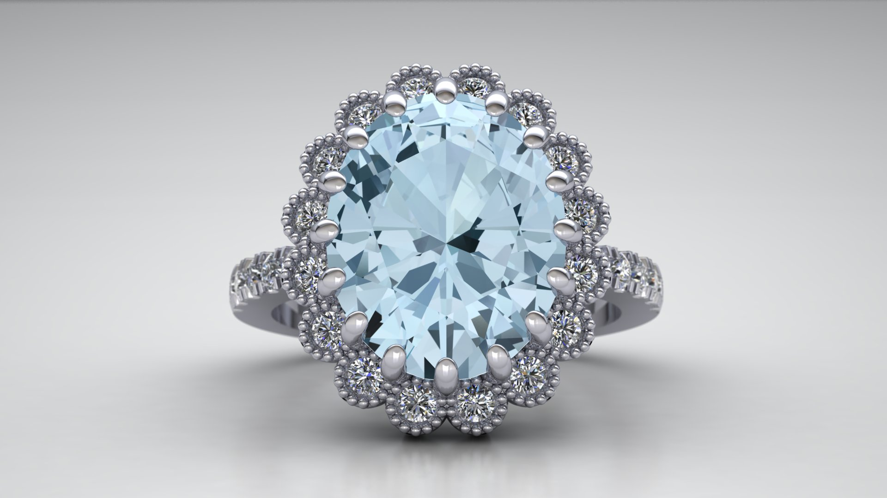
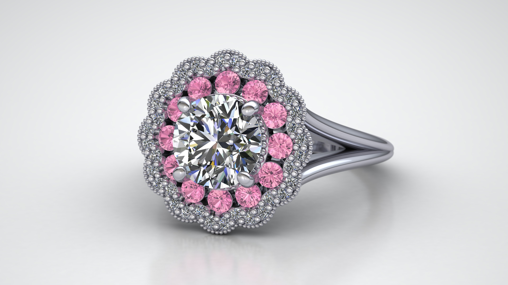
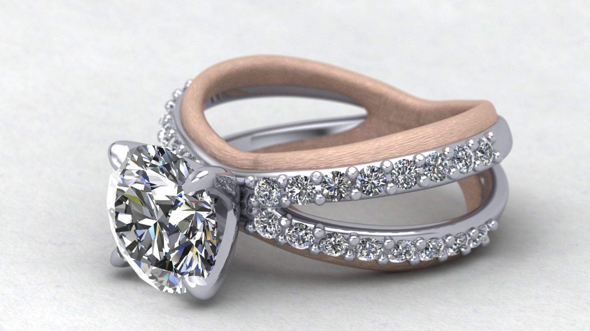
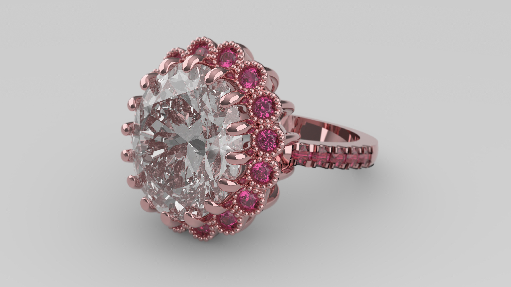
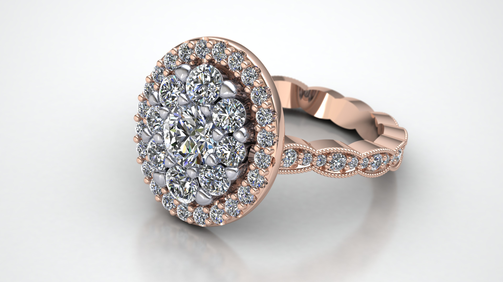

Two Tone ring featuring white diamonds and blue sapphires.

Platinum and diamond art-deco inspired ring accented with emeralds.

A black tahitian pearl accented with diamonds in a modern mounting

A substantial aquamarine framed with colorless diamonds.

A double halo ring featuring diamonds and bright pink sapphires.A bright round diamond framed by more bright diamonds and accented with deep blue sapphires.

A modern rose and white gold ring with colorless diamonds.

Pink tourmaline frame the substantial oval diamond.

A diamond cluster ring set in rose and white gold.